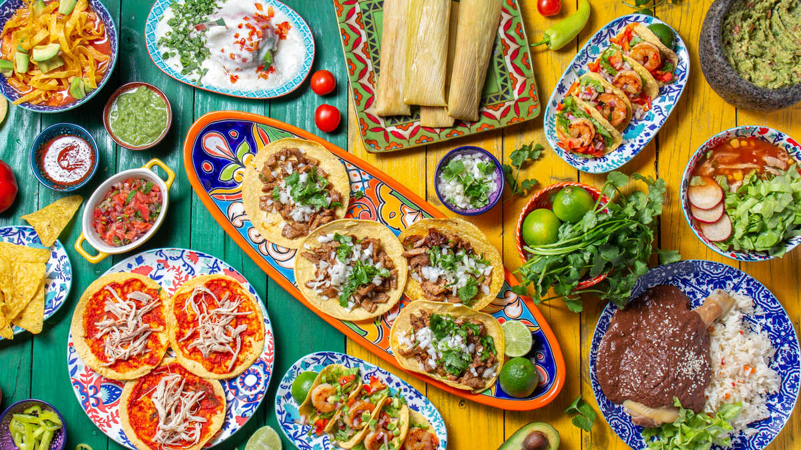
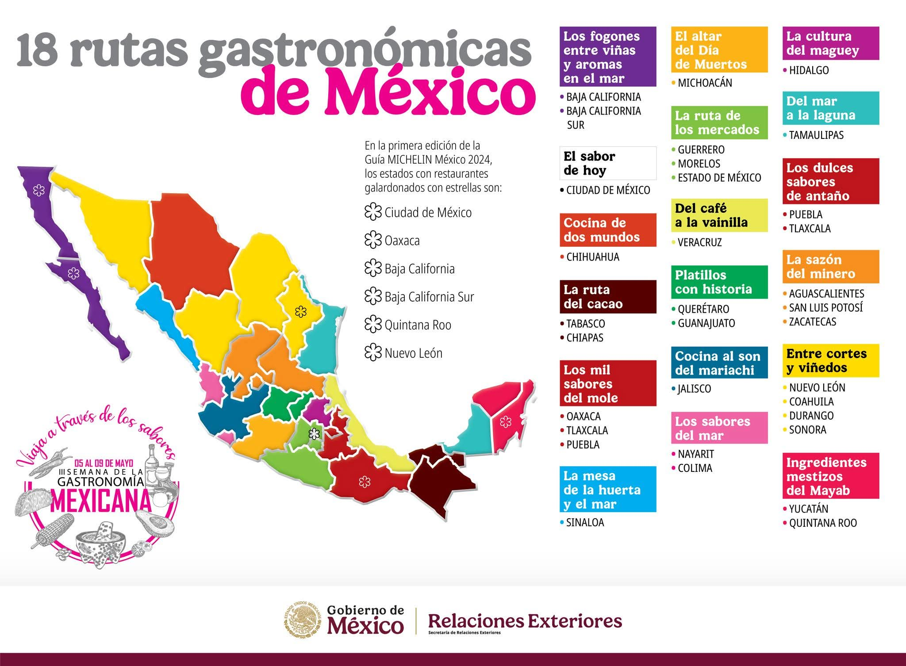

La gastronomía mexicana es una de las más importantes y reconocidas del mundo por su gran variedad de
sabores,
colores,
ingredientes
e historia.
El 16 de noviembre de 2010 fue declarada por la
UNESCO
como
Patrimonio Cultural Inmaterial de la Humanidad,
debido a que representa una parte esencial de la
identidad
y las tradiciones del país.
La cocina mexicana es el resultado de una larga historia en la que se mezclaron las costumbres culinarias de los pueblos originarios con influencias de Europa, Asia y África.
Entre sus ingredientes más representativos destacan el
maíz,
el
chile,
los
frijoles
y el
nopal,
base de una enorme diversidad de platillos típicos que cambian de un estado a otro.
Desde la almeja chocolatada de Baja California Sur hasta la sopa de lima de Yucatán, cada región ofrece sabores únicos que reflejan su cultura y tradiciones.

Más allá de la preparación de los alimentos, la gastronomía forma parte de la vida cotidiana de las familias mexicanas.
Cocinar, compartir y consumir los alimentos fortalece la convivencia, preserva las
tradiciones
y transmite conocimientos de generación en generación.
Las recetas tradicionales y los mercados representan un valioso patrimonio cultural, ya que muestran la evolución de los ingredientes, las técnicas de cocina y las formas de alimentación a lo largo del tiempo.
Además, la gastronomía mexicana tiene un impacto importante en el
turismo,
la economía, el comercio, la educación y la salud.
Miles de personas visitan México para conocer y disfrutar su riqueza culinaria, convirtiendo a la comida en uno de los principales atractivos del país.
En conclusión, la gastronomía mexicana es mucho más que un conjunto de platillos; es una expresión de la historia, la diversidad y la
identidad de México.
Conservar y valorar sus tradiciones permite mantener vivo un legado cultural que sigue siendo motivo de orgullo para los mexicanos y de admiración en todo el mundo.
México cuenta con una enorme diversidad culinaria y algunos estados destacan por la riqueza de sus recetas, ingredientes y tradiciones. Cada uno posee platillos únicos que representan su historia y cultura.